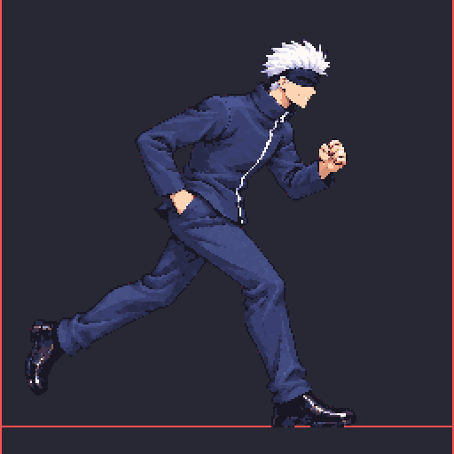

Dash v10 (2 frames, loop)

A low forward lunge, the near fist forward and the far hand in the pocket. Source attempt 3 (SHA256 6132E315714021F32BAD7D80F46E5C42B5A050A38C0E53AD5E56C9CD713C34FE); the head fits the idle (auto-head x1.2626, head 1.00 of idle). Frame offsets hold the head still and fix a 12 px edge clip.